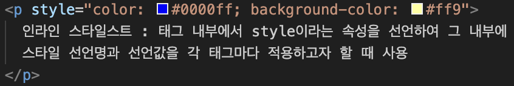
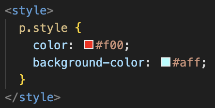
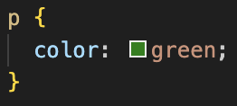
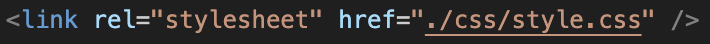

인라인 스타일스트 : 태그 내부에서 style이라는 속성을 선언하여 그 내부에 스타일 선언명과 선언값을 각 태그마다 적용하고자 할 때 사용
< 사용법 >
내부 스타일시트 : HTML문서 내부에 style 태그를 선언하여 해당하는 선택자에 스타일을 적용하고자 할 때 사용
< 사용법 >
외부 스타일시트 : HTML문서 외부에 별도의 스타일을 선언하는 문서를 구성하여 스타일을 적용하고자 할 때 사용
< 사용법 >
 인라인 스타일시트 > 내부 또는 외부 스타일시트
(내부 및 외부의 우선순위는 마지막에 작성된 스타일의 영향을 받는다. 기준은 HTML문서 상에서)